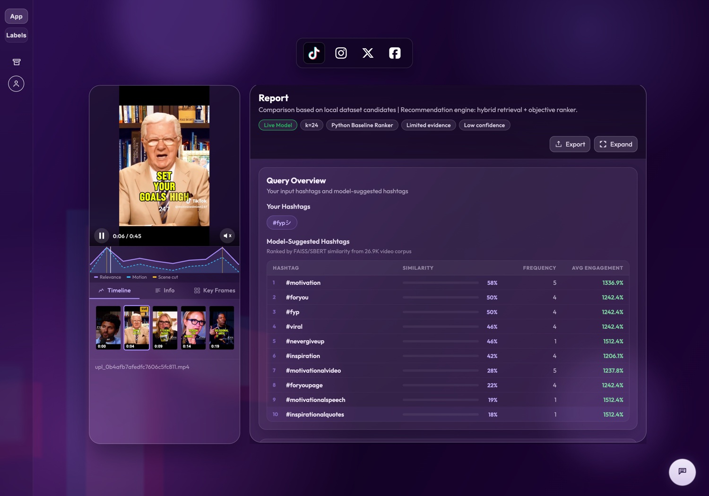
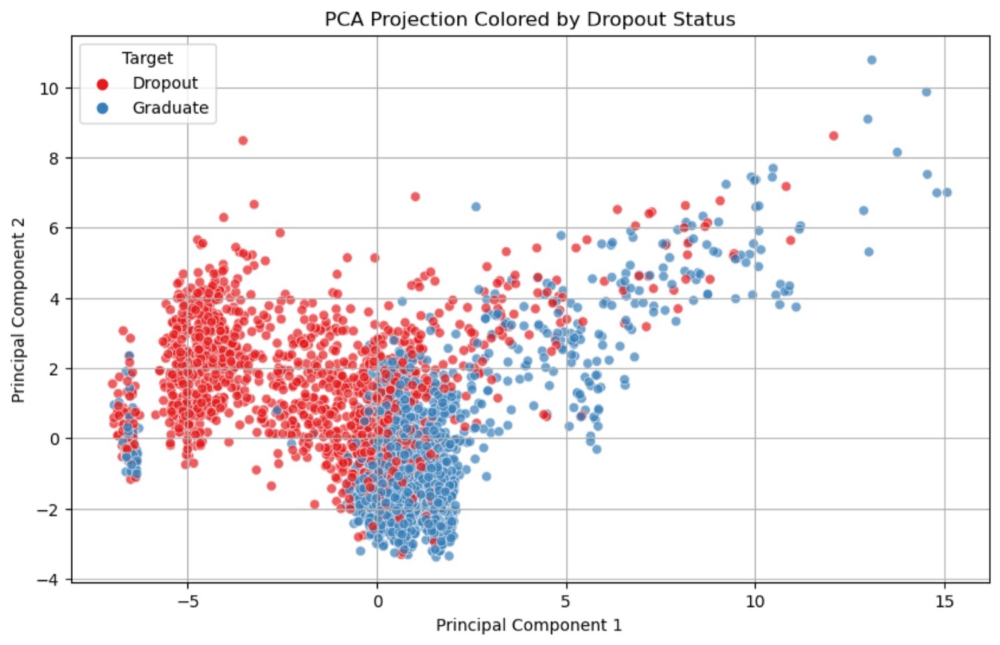
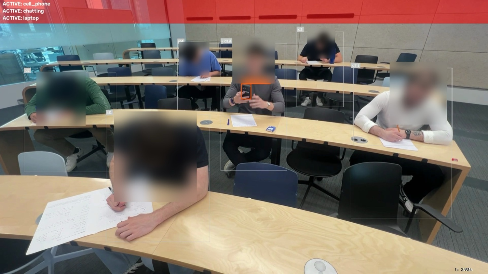
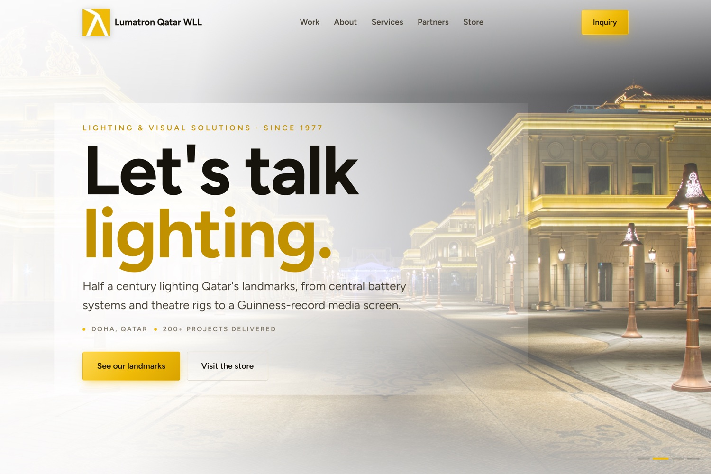

I build software that ships, not software that demos.
Fourth-year Computer Science and Artificial Intelligence student at IE University. I work across the stack and into the model layer: recommender systems, cloud platforms, CI/CD pipelines, and a couple of real businesses whose websites I wrote and deployed myself.
- Focus
- Full-stack & applied ML
- Studying
- CS & AI, IE University
- Most recently
- Software engineering intern, Kurrant
- Currently
- Exchange at Bentley University
Selected work
8 projects

TikTok Recommendation & Creator Analytics
A learning-to-rank recommender with a LambdaRank optimiser, a fine-tuned embedding model and a FastAPI serving layer. The full pipeline lifts NDCG@10 from 0.368 to 0.478.
Read more
OpenData Platform at Kurrant
Rebuilt the platform that collects, normalises and publishes street-lighting open data for public authorities. Shipped the first end-to-end production release.
Read more
Atlantis Car Rental
A six-page site for a family car-rental business in Anfeh, Lebanon. Next.js, statically exported, with a CI pipeline that refuses to deploy a broken build.
Read more
IEstagram — Cloud Social Platform
A social network with posts, likes, comments, follows and live updates over WebSockets. Deployed to Azure with S3 media storage and coverage-gated CI/CD.
Read more
Student Dropout Prediction
An end-to-end supervised pipeline over 4,424 student records and 34 features. The best model reaches 0.947 ROC-AUC, and SHAP explains what actually drives the risk.
Read more
Intelligent Exam Proctoring
A YOLO11 pipeline that watches exam footage for phones, laptops and peer-to-peer chatting, with tiled inference, pose-based tracking and a Flask interface over the top.
Read more
Lumatron
A custom WordPress theme and WooCommerce storefront for a Qatari lighting contractor working since 1977. Live at lumatron.qa, with eleven projects and a 39-product catalogue.
Read more
Grade & What-If Tracker
Track assessments, see your weighted grade, then ask the real question: what do I need on the final? A FastAPI service with a clean layered architecture.
Read moreAbout
I am in my fourth year of a Computer Science and Artificial Intelligence degree at IE University in Madrid, on the Scholarship for Personal Excellence. The work I care about sits where a model meets a product: the ranking that has to serve in under a second, the pipeline that has to publish correctly at 3am, the site a family business will actually rely on for its phone to ring.
Outside coursework I take on client work. Two of the projects here are live businesses in Lebanon and Qatar that asked for a website and got a deployment pipeline with it.
At a glance
- Degree
- BSc Computer Science & AI, expected June 2027
- GPA
- 8.2 / 10
- Exchange
- Bentley University, Massachusetts
- Based in
- Madrid, Spain
Toolkit
Languages
- Arabic
- Native
- French
- Fluent
- English
- Fluent
- Spanish
- Intermediate
Let's build something
I am open to software and machine learning internships, and to freelance work on sites and data pipelines. The fastest way to reach me is email.